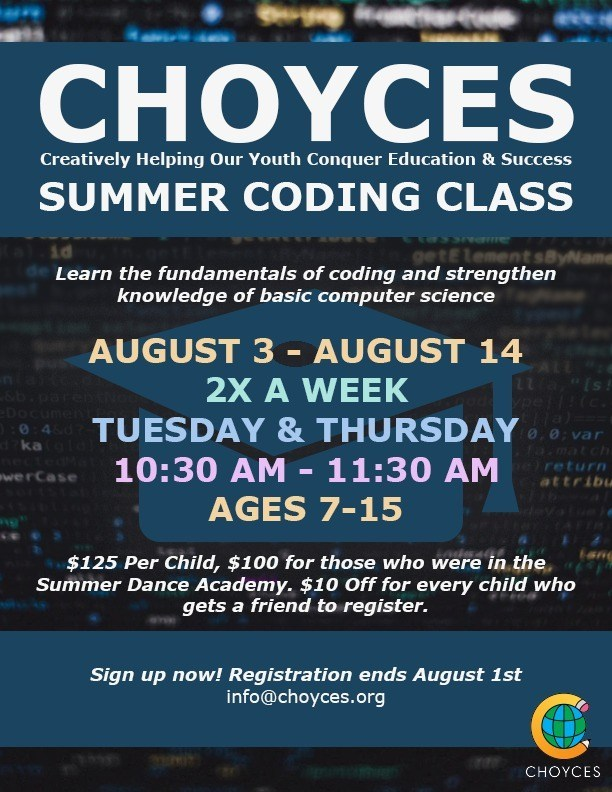
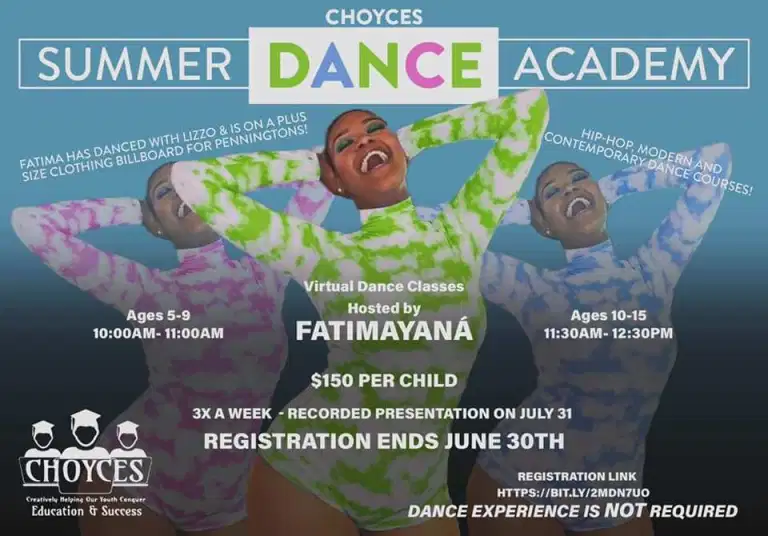

CHOYCES SUMMER DANCE ACADEMY FINAL PERFORMANCE
As an advocate for addressing social justice issues, CHOYCES is excited to host our first Social Justice Book Club! Recent events have more than demonstrated that our society has a lot of work to do. We are now faced with a pressing need to discuss current issues with our youth in order to help them grow into knowledgeable and compassionate global citizens. Talking to children about social justice is no easy task, but it’s such an important one; reading and discussing books about human rights topics is a perfect way to start a conservation! Led by a CHOYCES trained educator, our Social Justice Book Club will provide opportunities for your child to tackle implicit biases, explore current social issues more deeply, and foster the courage to fight for their own rights and those around them.
Help your children grow this summer by signing them up to learn a new skill! The CHOYCES summer coding academy will help your child learn the fundamentals of coding while also having fun.

“My kids doing the Coding classes thru Danielle’s CHOYCES program!
Great way to keep the kids busy and still learning this summer, as well
as keeping kids active through the dance program that was run by Fatima!
Thank you so much for this opportunity!”
- Brittany Fulmore
Parent
CHOYCES is hosting a virtual summer dance academy featuring guest artist FatimaYana (Fatima Simmons) who is the co-founder of C.H.O.Y.C.E.S. and has danced with Lizzo. The summer dance academy will run from July 6th to July 31st and will be open for children ages 5-15. Registration ends on June 30th. Dance experience is NOT required.
